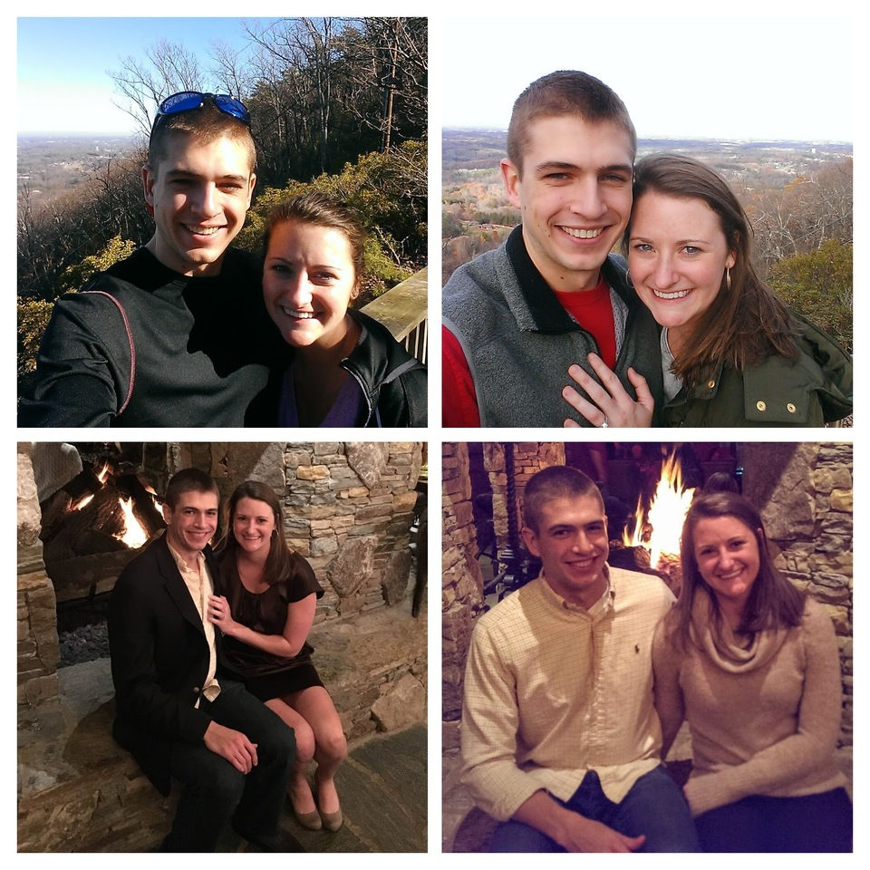
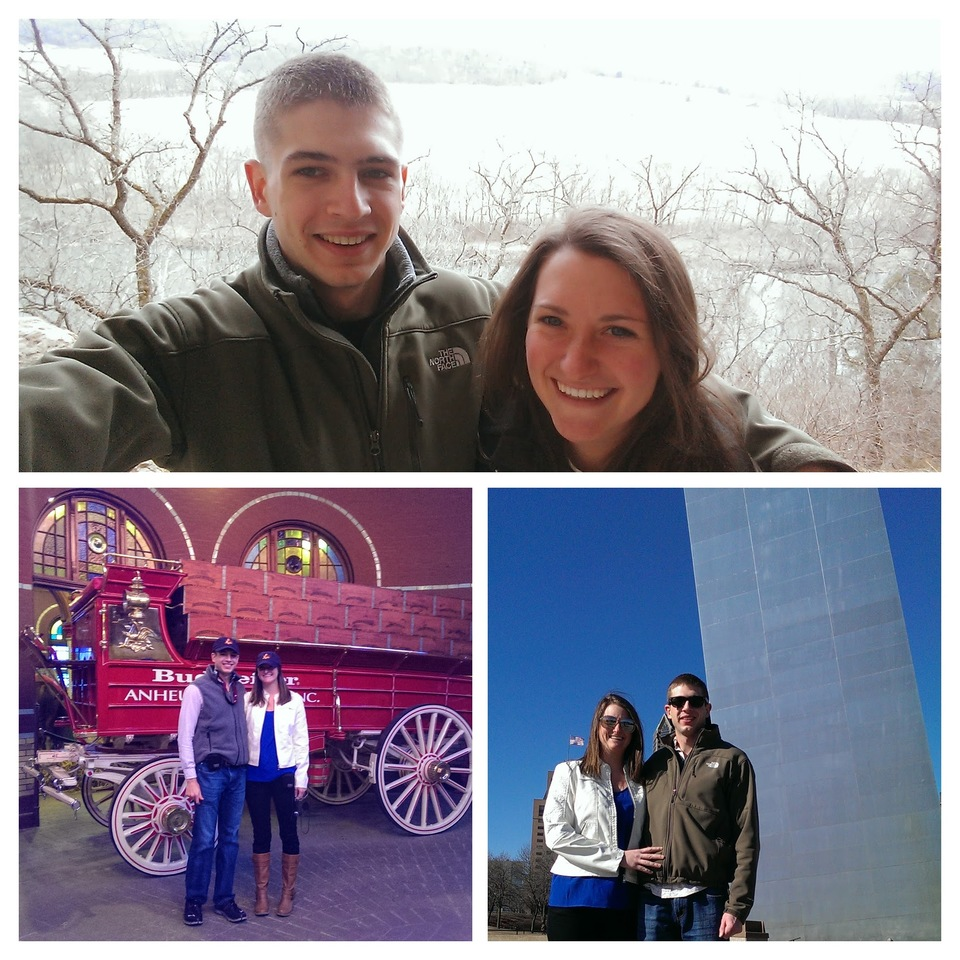
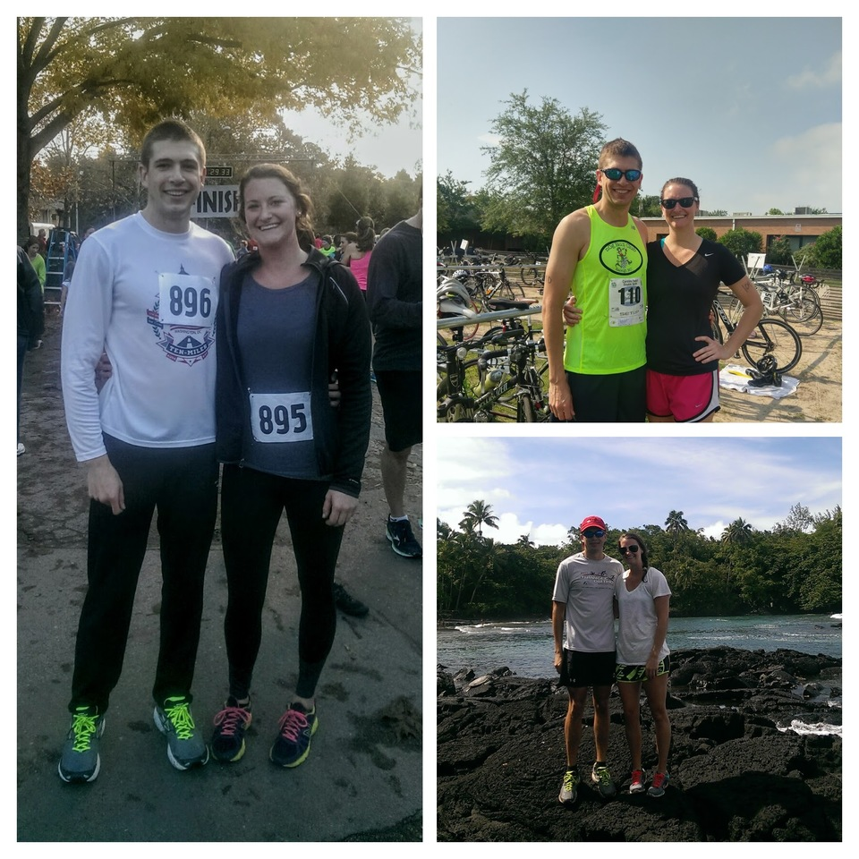
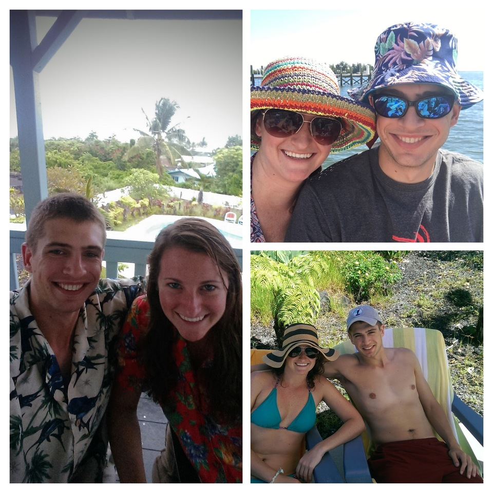
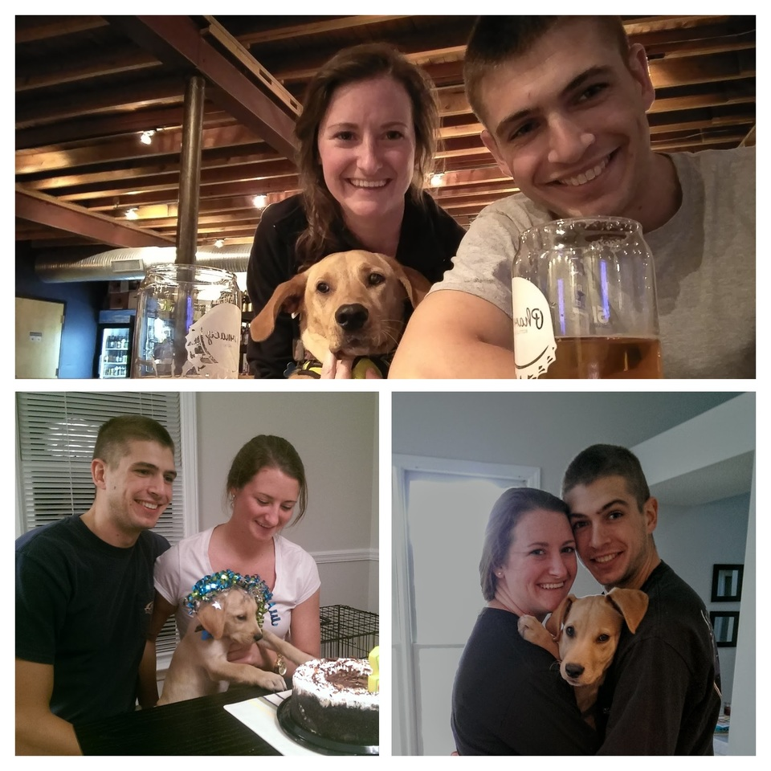

<!--
@license
Copyright (c) 2016 The Polymer Project Authors. All rights reserved.
This code may only be used under the BSD style license found at http://polymer.github.io/LICENSE.txt
The complete set of authors may be found at http://polymer.github.io/AUTHORS.txt
The complete set of contributors may be found at http://polymer.github.io/CONTRIBUTORS.txt
Code distributed by Google as part of the polymer project is also
subject to an additional IP rights grant found at http://polymer.github.io/PATENTS.txt
-->

<link rel="import" href="../bower_components/polymer/polymer.html">
<link rel="import" href="../bower_components/app-layout/app-scroll-effects/effects/parallax-background.html">
<link rel="import" href="../bower_components/app-layout/app-box/app-box.html">
<link rel="import" href="shared-styles.html">

<dom-module id="wedding-story">

  <template>

    <style include="shared-styles"></style>
    <style>
      :host {
        display: block;
      }
      
      app-box {
        height: 600px;
        max-height: 65vw;
        max-width: 768px;
        margin: 0 auto;
      }
      
      article {
        padding: 5px 15px 35px 15px;
      }
    </style>

<h1>How it all began</h1>
<div class="card">
   <section>
    <app-box effects="parallax-background">
      
    </app-box>
    <article >
      <h3>The Lovely town of Hickory, NC</h3>
      <div>
        Maggie and Caleb met while Maggie was attending grad school in Hickory.  Between hikes
        at Baker's Mountain and weekend escapes to Asheville, Caleb got a few ideas for the engagement.
      </div>
    </article>
  </section>

  <section>
    <app-box effects="parallax-background">
      
    </app-box>
    <article>
      <h3>Distance can't keep love apart</h3>
      <div>
        Maggie was a frequent visitor to the great state of Missouri while Caleb went to Army Engineer School.
        Thankfully it is also home to the first Anheuser Busch brewery, so there was no shortage of fun!
      </div>
    </article>
  </section>

  <section>
    <app-box effects="parallax-background">
      
    </app-box>
    <article>
      <h3>Fitness Buddies</h3>
      <div>
        Whether it's a bike ride to the beach or a triathalon on the beach, Maggie and Caleb can be found
        charging through the pain to get to the finish line &ndash; where more times than not there's a cold beer waiting
      </div>
    </article>
  </section>
  
  <section>
    <app-box effects="parallax-background">
      
    </app-box>
    <article>
      <h3>Vacation, Anyone?</h3>
      <div>
        We've been to St. Louis, Hawaii, Vero Beach, Washington D.C., and Austin so far, with plans to go to Europe
        next summer for our honeymoon!
      </div>
    </article>
  </section>
  
  <section>
    <app-box effects="parallax-background">
      
    </app-box>
    <article>
      <h3>Dog Family</h3>
      <div>
        The newest addition to our family, Austen, has grown from a 12lb puppy to a 62lb gentle beast over the past year.
        Her favorite passtimes include going to the bar and eating sticks and leaves.
      </div>
    </article>
  </section>
</div>


  </template>

  <script>

    Polymer({

      is: 'wedding-story'

    });

  </script>

</dom-module>
